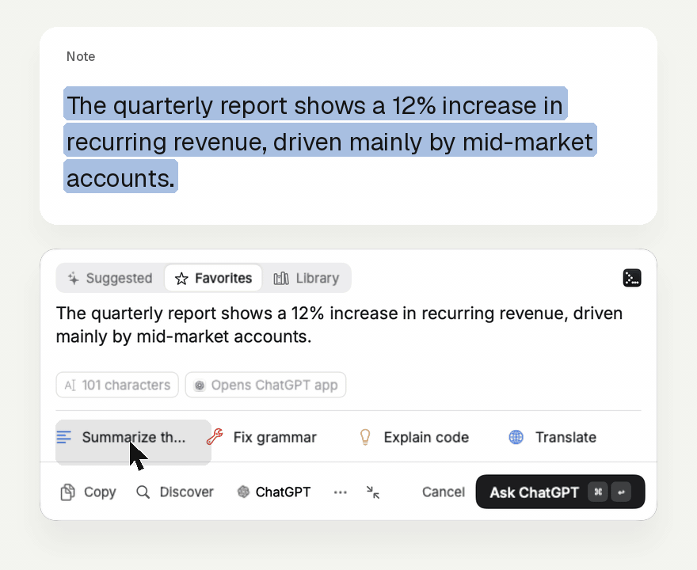

Writing
Select a paragraph in Mail or Pages, apply a rewrite prompt, and send it to ChatGPT or Claude without leaving the document.
The complete list. Promptly is a macOS menu bar app — it appears next to the text you select, with your prompt library one click away.
The core experience, next to your cursor. It appears when you select text, never covers the selection, and comes in two styles you can switch at any time.


Nine services, plus your own URL.

Your prompts, stored on your Mac.

A check on the prompt before you send it.

Browse prompts from connected libraries.

Shared libraries, stored tokens in the Keychain.
Everything you can adjust.
From the app.
| Action | Keys |
|---|---|
| Ask the AI service | ⌘↩ |
| Copy prompt + text | ⌥click |
| Settings | ⌘, |
| Close | esc |
| New prompt or context | ⌘N |
| Search library | ⌘F |
| Edit | double-click |
| Delete selected | ⌫ |
Demo figures
An illustrative forecast, not measured results. Change the number of asks to see how the model adds up.
Cumulative, at 15 asks a day
How this is calculated. These are demo figures — an illustrative forecast, not measured customer results. The model compares a typical manual path (copy the text, switch to the AI app, find a prompt, paste both, and send) at 40 seconds, with Promptly’s path (select the text, click a prompt, press Ask) at 5 seconds. That’s 35 seconds back on every ask. The yearly figure uses 230 workdays. A team of 5 at the same pace: 168 hours a year. We’ll replace this with real usage data when we have it.
Select a paragraph in Mail or Pages, apply a rewrite prompt, and send it to ChatGPT or Claude without leaving the document.
Select a customer message, pick your reply prompt, and open the AI you already use with the text already filled in.
Select an error or a function, click a debug prompt, and send it on — no copy, switch, and paste in between.
Select text, pick a prompt, press Ask — filmed from the Mac app.


